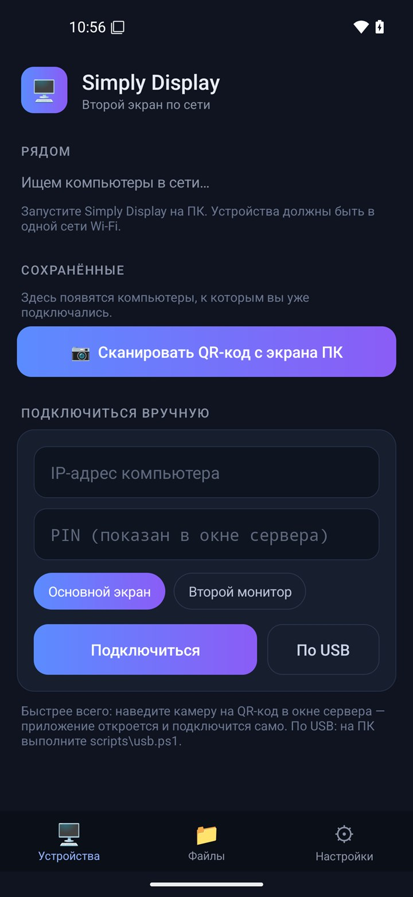

Приложения для эфира и вторых экранов.
Видеомикшер для Windows, второй экран по сети и пульт для Android. Бесплатно, без регистрации и ключей. Данные остаются в вашей сети.

Три программы, одна сеть.
Каждая полезна сама по себе. Вместе — удобнее: пульт управляет микшером, а планшет может стать вторым монитором.
Simply Cast
Видеомикшер: камеры, экран, видеофайлы, NDI и веб-страницы — в эфир, запись и стрим одновременно. Переходы, титры, аудиомикшер с шинами и громкостью в LUFS.

Simply Display
Второй экран по сети: телефон или планшет показывает рабочий стол компьютера, принимает касания, передаёт файлы, звук и буфер обмена. Видео H.264, трафик зашифрован.


Simply Cast Remote
Пульт для Android: превью и эфир на экране, переключение входов, переходы, камера телефона как вход.
Где это пригождается.
Церкви и мероприятия
Камеры, песни и титры — в зал и в прямой эфир.
Образование
Лекция с экраном, камерой и презентацией сразу в запись.
Игры и стримы
Захват экрана и камеры, оверлеи, стрим в несколько мест сразу.
Подкасты и шоу
Несколько камер, звук с шинами, громкость в LUFS.
Работа за двумя экранами
Планшет как второй монитор для ноутбука, файлы и буфер обмена между устройствами.
Режиссёр с планшетом
Управление эфиром из зала, а не из-за компьютера.
Начните с Simply Cast.
Установите, добавьте камеру и нажмите «Выйти в эфир».